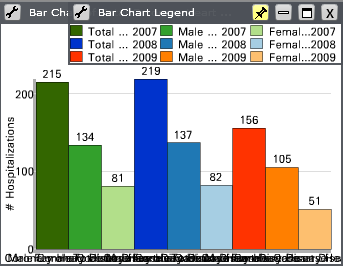
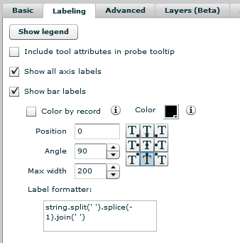
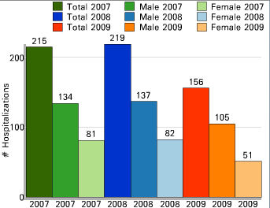
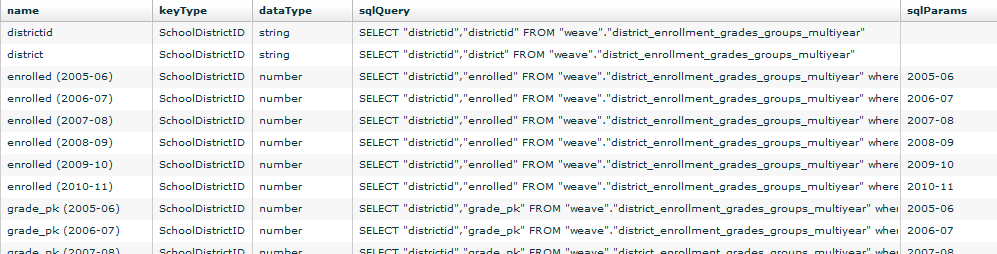
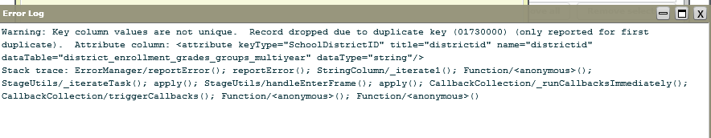
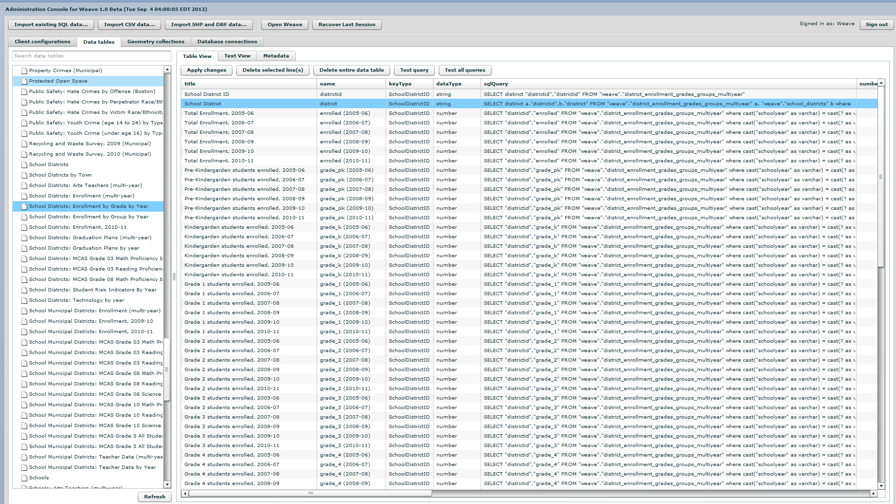
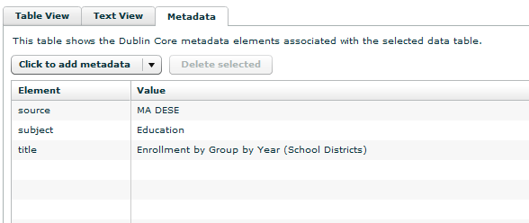
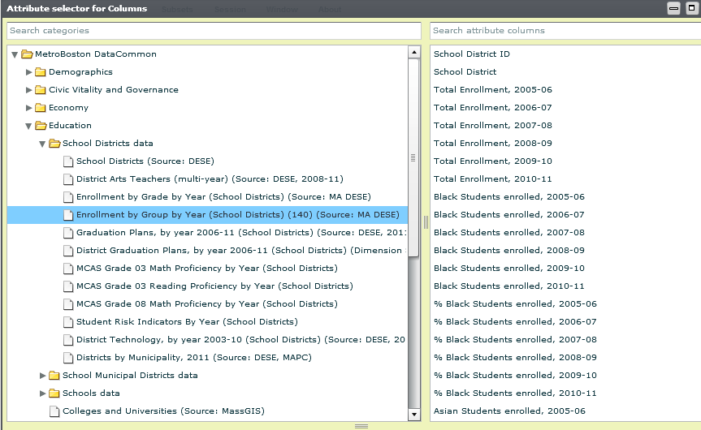

MAPC
Weave Integration
Website, Data & User Community
Embed Flash using the swfobject library
Abstracts cross-browser issues
Better control over Flash object
How it works
<script type="text/javascript" src="/swfobject.js"></script>
<script type="text/javascript" >
// Embed Weave Flash instance
swfobject.embedSWF(
"/weave.swf",
"weave-container",
"455", "315",
"10.0.0", // required min Flash Version
"expressInstall.swf",
{ // Flash vars
file: "visualization.xml"
},
{ // Flash parameters
quality: "high",
base: "/"
},
{ // Flash object attributes
id: "weave-visualization"
}
);
</script>
<div id="weave-container"></div>
Save Session State as Database Object
Better control over Session State object
Store visualization meta information
Add security layer
How it works
// POST SessionState using jQuery
$.post(
"/weave/save/",
{
"sessionstate": JSON.stringify(weave.getSessionState([]))
}
);
# Django Visualization model class
class Visualization(models.Model, PermissionLevelMixin):
sessionstate = models.TextField()
Automatic Thumbnails
Multiple Weave visualizations on one page
Accessible without Flash plugin
Print page with visualizations
How it works
// Get Base64 representation of visualization
var base64data = weave.evaluateExpression(
null,
'getBase64Image(Application.application.visDesktop)',
null,
['weave.utils.BitmapUtils', 'mx.core.Application']
);
// Send data to server
$.post(
"/weave/save/",
{
"base64data": base64data
}
);
# Receive Base64 data and saves it as PNG image on server
def save_thumbnail(base64data):
thumbnail = Image.open(BytesIO(base64.b64decode(base64data)))
thumbnail.save('thumbnail.png', 'PNG', optimize=True)
How it works
<!-- Turn static thumbnail into interactive Weave instance -->
<img class="thumbnail" src="thumbnail.png" alt="visualization" >
<script type="text/javascript" >
$("img.thumbnail").on("click", function() {
// Element containing the thumbnail
// will be our new weave container
var weave_container = $(this).parent().attr("id");
// embed Weave Flash object
swfobject.embedSWF(
"weave.swf",
weave_container,
...
);
})
.hover(function() {
// Use click cursor on image mouse over
$(this).css("cursor", "pointer");
});
</script>
Label Formatter
Problem: Text is too large for the visualitzation space.
Label Formatter

string.split(' ').splice(-1).join(' ')
Label Formatter

// shows first and last word
a = string.split(' '); a.shift() + ' ' + a.pop()
Label Formatter
`% SHI: Feb 2005` → `Feb 2005`
// displays the last 2 words
string.split(' ').splice(-2).join(' ')
// shows the last 10 characters
string.substring(10, (string.length))
Label Formatter
Solution: Formatting the text within the visualization to make the best use of limited space
Loading Annualized Data
Problem: Loading data that can be used in an map, bar chart or line chart
Solution: Filtered Column Query

Loading Annualized Data
Results in extra unecessary rows for the School District ID Name and year.
Removing the extra rows and year references.
Loading Annualized Data
Just removing the extraneous rows does isolate the unique values
Loading Annualized Data
District ID
Loading Annualized Data
District - problem with consistent naming over the years means the distinct command will not work.
-- Old Query
SELECT "districtid","districtid" FROM "weave"."district_enrollment_grades_groups_multiyear"
-- New Query:
SELECT distinct "districtid","districtid" FROM "weave"."district_enrollment_grades_groups_multiyear"
Loading Annualized Data
Solution: select the distinct name from a separate table containing the unique names
SELECT distinct a."districtid",b."dristrict"
FROM "weave"."district_enrollment_grades_groups_multiyear" a, "weave"."school_districts" b
where a."districtid" = b."districtid" ORDER BY a."districtid"
Data Hierarchy

Data Source
Adding both the title and source will display in the attribute Selector
Data Source
User Types
DataCommon users range from
"savvy technologists" to "reluctant users".
Training materials should accomodate both.
Monthly Training
- Users map an indicator
- Create bar graph
- Complete User Case
Web-based Training
Video covers beginner and advanced subjects related to Weave and data visualization generally:
- Introduction to WEAVE
- Using the R scripting window
- Binning Data
Learning By Doing
Let users try and fail and try again